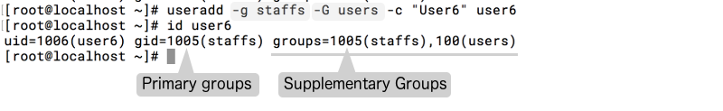

บริหารจัดการบัญชีผู้ใช้งานและกลุ่มผู้ใช้งาน (Users and Groups)
ผู้ดูแลระบบจะต้องมีความสามารถจัดการบัญชีผู้ใช้งานและกลุ่มผู้ใช้งาน โดยสามารถ เพิ่ม หรือ ลบ และรวมไปถึงการจัดการคุณสมบัติ และสิทธิผู้ใช้งาน ผ่านทาง command line โดย user แต่ละคน จะมีหมายเลขประจำตัว UID (UserID) และ หมายเลขกลุ่ม GID (GroupID) ที่แตกต่างกันของแต่ละคน และเมื่อ user สร้าง file สิทธิ permission ก็จะเป็นของ ผู้สร้าง โดยโครงสร้างของ permission จะแบ่งออกเป็น 3 ส่วน ได้แต่ เจ้าของ Owner, Group, Other
User root มี UID "0" User ของระบบ จะ น้อยกว่า 1-999 ส่วน user ที่เป็นผู้ใช้งานจะเริ่มต้น ที่ 1000
cat /etc/login.defs
cat /etc/passwd
cat /etc/shadow
คำสั่งที่เกี่ยวข้องสำหรับการจัดการ User
useradd [options] username
ตัวอย่าง สร้าง user ให้แก่ตัวเอง
# useradd -c "sawangpong muadphet" sawangpong
# cat /etc/passwd | grep sawan
sawangpong:x:1001:1001:sawangpong muadphet:/home/sawangpong:/bin/bash
# getent passwd | grep sawangpong
# id sawangpong
uid=1001(sawangpong) gid=1001(sawangpong) groups=1001(sawangpong)
getent เป็นคำสั่ง ที่ใช้อ่านข้อมูลผู้ใช้งานจาก ฐานข้อมูล administrative database
นอกจากจะสร้าง user แล้วยังสร้าง group ที่มีชื่อเดียวกับ username (primary group)
รายละเอียดเพิ่มเติม
cat /etc/login.defs | grep HOME
CREATE_HOME yes
cat /etc/passwd
cat /etc/shadow
cat /etc/default/useradd
เปลี่ยนแปลงค่า ใน vi /etc/login.defs โดยจะทำการยกเลิกการสร้าง home อัตโนมัติ และ ยกเลิกการสร้าง private group
# vi /etc/login.defs
60 CREATE_HOME no
.u
68 USERGROUPS_ENAB no
# useradd -c "User2" user2
# id user2
uid=1002(user2) gid=1002(user2) groups=1002(user2)
# ls /home
sawangpong vagrant
(สรุปผล ระบบไม่สร้าง /home/user2 ให้ เนื่องจากมีการเปลี่ยนแปลงค่าใน /etc/login.defs)
# useradd -m -c "User3" user3
# id user3
# ls /home
sawangpong user3 vagrant
(สรุปผล ระบบสร้าง /home/user3 ให้ เนื่องจาก option -m)
# vi /etc/login.defs
68 USERGROUPS_ENAB no
# useradd -c "User4" user4
# id user4
uid=1004(user4) gid=100(users) groups=100(users)
(สรุปผล จะไม่ได้มีการสร้าง Private group ให้แก่ user ใหม่ แต่จะสร้าง user แล้วเอาไปรวมไว้ที่ group กลาง
ชื่อว่า กลุ่ม users ที่มีหมายเลข gid 100 ถือเป็นค่า default)
หากต้องการที่จะกำหนด group เองต้องกำหนดด้วย option -g
# groupadd staffs
# useradd -g staffs -c "User5" user5
# id user5
uid=1005(user5) gid=1005(staffs) groups=1005(staffs)
# cat /etc/group | grep staffs
staffs:x:1005:
Supplementary Groups
โดย คำสั่ง groupadd เป็นคำสั่งที่ใช้ในการสร้าง กลุ่มขึ้นมา โดยเป็นอิสระจาก user โดยจะเรียกว่า Supplementary Groups (additional Groups) เราสามารถเพิ่ม กลุ่ม Supplementary Group ได้สองแนวทาง
เพิ่ม Supplementary Group ให้แก่ user ที่มีอยู่ในระบบแล้ว
# usermod -a -G users user5
เพิ่ม Supplementary Group ให้แก่ user ขณะมีการสร้าง user
# useradd -g staffs -G users -c "User6" user6

ทดสอบการสร้าง userโดยการใช้ script โดยการสร้าง file
#vim gen_user.sh
#!/bin/bash
for NAME in office1 office2 office3 office4
do
useradd ${NAME}
echo "password" | passwd --stdin ${NAME}
done
option --stdin เป็นการรับค่าจาก standard input ในที่นี้ คือรับ ค่าจาก pipe "|"
# bash gen_user.sh
Changing password for user office1.
passwd: all authentication tokens updated successfully.
Changing password for user office2.
passwd: all authentication tokens updated successfully.
Changing password for user office3.
passwd: all authentication tokens updated successfully.
Changing password for user office4.
passwd: all authentication tokens updated successfully.
# tail -n 4 /etc/passwd
office1:x:1007:100::/home/office1:/bin/bash
office2:x:1008:100::/home/office2:/bin/bash
office3:x:1009:100::/home/office3:/bin/bash
office4:x:1010:100::/home/office4:/bin/bash
การสลับ user ด้วยคำสั่ง su - <username>
คำสั่ง su อนุญาตให้ สามารถสลับ user หากไม่มีการระบุ ว่าให้เปลี่ยน เป็น username ใดก็จะหมายถึงการแปลงเป็น user root
[vagrant@localhost ~]$ su -
Password:
Last login: Sun Nov 12 13:01:55 +07 2017 on pts/0
[root@localhost ~]#
จากตัวอย่าง เป็นการสลับ user จาก vagrant ไปยัง root โดยการใช้คำสั่ง su - แต่ต้องรู้ว่า password root คืออะไร แต่หากใช้คำสั่ง sudo su -
[vagrant@localhost ~]$ sudo su -
Last login: Sun Nov 12 16:10:07 +07 2017 on pts/0
[root@localhost ~]#
คำสั่ง sudo เป็นคำสั่งที่อนุญาต ให้ user นั้น สามาถสั่งคำสั่ง ในฐานะของ root ได้โดยที่ไม่ต้องเป็น root แต่จะต้องระบุรายชื่อของ user ไว้ก่อนล่วงหน้าใน file /etc/sudoers หรือระบุไว้ใน /etc/sudoers.d/* และการการใช้คำสั่งในฐานะ sudo นี้ จะต้องใช้ password ของ user เอง สำหรับ Authentication
การสั่ง คำสั่ง sudo จะแสดงจะสามารถเห็นผลได้ใน /var/log/secure
# cat /var/log/secure
Nov 12 16:33:02 localhost su: pam_unix(su-l:session): session closed for user root
Nov 12 16:33:16 localhost sudo: vagrant : TTY=pts/0 ; PWD=/home/vagrant ; USER=root ; COMMAND=/bin/su -
Nov 12 16:33:16 localhost su: pam_unix(su-l:session): session opened for user root by vagrant(uid=0)
Sudo Config file
# vi /etc/sudoers.d/vagrant
%vagrant ALL=(ALL) NOPASSWD: ALL
%vagrant จะหมายถึง กลุ่ม vagrant สามารถสั่งคำสั่งได้ทั้งหมดโดยไม่ต้องใช้ password (NOPASSWD option)
ตัวอย่างการกำหนดเพิ่มเติม
# vi /etc/sudoers
91 ## Allow root to run any commands anywhere
92 root ALL=(ALL) ALL
98 ## Allows people in group wheel to run all commands
99 %wheel ALL=(ALL) ALL
ในบรรทัดที่ 99 จะเห็นว่า user ที่อยู่ในกลุ่ม wheel การสามารถใช้สิทธิ sudo ได้เช่นเดียวกัน
บริหารจัดการ Local User Accounts
ที่ผ่านมาเราได้ใช้คำสั่ง useradd เพื่อ สร้าง user ต่อไปนี้ก็จะมาใช้คำสั่ง usermod เพื่อทำการ ปรับปรุงเปลี่ยนแปลงค่าที่เกี่ยวข้องกับ user
# usermod --help
Usage: usermod [options] LOGIN
Options:
-c, --comment COMMENT new value of the GECOS field
-d, --home HOME_DIR new home directory for the user account
-e, --expiredate EXPIRE_DATE set account expiration date to EXPIRE_DATE
-f, --inactive INACTIVE set password inactive after expiration
to INACTIVE
-g, --gid GROUP force use GROUP as new primary group
-G, --groups GROUPS new list of supplementary GROUPS
-a, --append append the user to the supplemental GROUPS
mentioned by the -G option without removing
him/her from other groups
-h, --help display this help message and exit
-l, --login NEW_LOGIN new value of the login name
-L, --lock lock the user account
-m, --move-home move contents of the home directory to the
new location (use only with -d)
-o, --non-unique allow using duplicate (non-unique) UID
-p, --password PASSWORD use encrypted password for the new password
-R, --root CHROOT_DIR directory to chroot into
-s, --shell SHELL new login shell for the user account
-u, --uid UID new UID for the user account
-U, --unlock unlock the user account
-Z, --selinux-user SEUSER new SELinux user mapping for the user account
ตัวอย่าง การเปลี่ยนแปลง primary group (-g)
# groupadd students
# useradd -c "student1" student1
# id student1
uid=1011(student1) gid=100(users) groups=100(users)
# usermod -g students student1
# id student1
uid=1011(student1) gid=1006(students) groups=1006(students)
ตัวอย่างการเปลี่ยนแปลง supplementary group
# usermod -aG wheel student1
# id student1
uid=1011(student1) gid=1006(students) groups=1006(students),10(wheel)
ตัวอย่างให้สร้าง user ดังนี้
กลุ่ม manager ประกอบด้วย somsak, preecha , porntip
กลุ่ม marketing ประกอบด้วย janjira, viyada, manood
โดย user แต่ละคนมี supplementary group ได้คนละ 1 group เท่านั้น